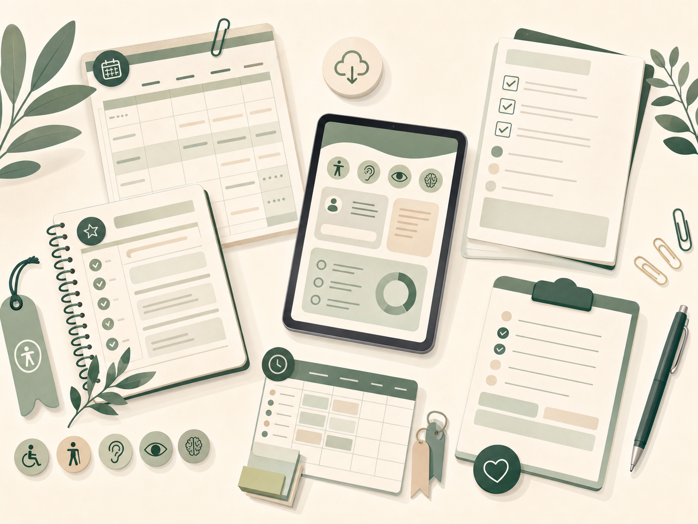

Checklist da Semana Organizada
Para planejar estudos, revisões, questões, pausas e pendências pessoais sem se perder.
Solicitar avisoMateriais Gratuitos
Checklists, planners e guias rápidos para baixar, imprimir ou usar no tablet assim que forem disponibilizados.

Biblioteca gratuita
Cada material terá um objetivo prático: planejar, revisar, organizar documentos ou destravar o início dos estudos.
Para planejar estudos, revisões, questões, pausas e pendências pessoais sem se perder.
Solicitar avisoModelo visual para organizar matérias, metas, horários e blocos de revisão.
Solicitar avisoPara organizar laudos, relatórios, exames, documentos pessoais e comprovantes.
Solicitar avisoPrimeiros passos para quem quer iniciar nos concursos sem comprar material em excesso.
Solicitar avisoOrganize matérias por prioridade, dificuldade, peso no edital e tempo disponível.
Solicitar avisoAmbiente, conforto, iluminação, ergonomia, tecnologia e acessibilidade.
Solicitar avisoComo usar
Escolha um material por vez. Preencha, teste por uma semana e ajuste. O objetivo não é acumular arquivos, mas criar clareza para agir.